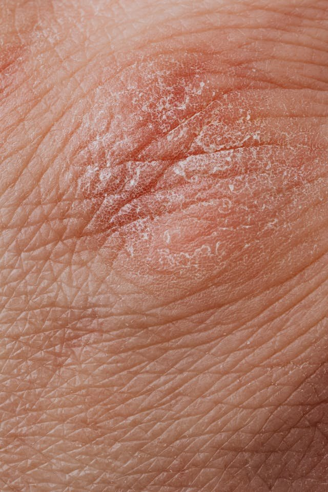

The Eczema Explainer

Hadiyah Daché, licensed cosmetologist & esthetician
Skin Conditions
6 min
← All articlesThe Book →Friendly reminder: this post contains affiliate links, which help support the Glowdega Archive. If you buy through them, I may earn a commission at no extra cost to you.
Eczema, a term often synonymous with dermatitis, refers to a group of conditions characterized by inflamed, itchy, and often reddened skin. This multifaceted skin disorder manifests in various forms—each with unique characteristics—yet sharing common symptoms. Over 30 million Americans have some form of eczema. That's like the entire population of Texas saying, "Yep, we’re itchy." Eczema also doesn’t discriminate – it affects all genders, races, and ages. Equal opportunity itchiness! Its prevalence underscores the necessity of a comprehensive understanding, particularly in its impact across different demographic groups.
If you have been dealing with Eczema and looking for ways to help improve your experience with this condition, keep reading.
Is it Eczema or Dermatitis?
Great question. To truly understand Eczema we must first clearly define these two terms. They are often used interchangeably, but have subtle differences in their meanings and usage.
Dermatitis: This is a general term that refers to any inflammation of the skin. Dermatitis can be caused by a variety of factors, including allergic reactions, irritants, and underlying health conditions. There are different types of dermatitis, such as contact dermatitis (caused by skin contact with irritants or allergens), seborrheic dermatitis (a form affecting the scalp and face), and atopic dermatitis.
Eczema: Eczema is more specific and is often used synonymously with "atopic dermatitis," the most common form of dermatitis. Atopic dermatitis is a chronic skin condition that typically starts in childhood and is characterized by dry, itchy, and inflamed skin. Eczema is thought to be driven by a combination of genetic and environmental factors, and it is often associated with other atopic disorders like asthma and hay fever.
TL;DR, dermatitis is a broad term that encompasses various types of skin inflammation, including eczema. Eczema, specifically, usually refers to atopic dermatitis, a chronic and more specific form of dermatitis characterized by its long-lasting nature and association with other atopic conditions.
Types of Eczema
As we just mentioned, atopic dermatitis is by far the most common form of eczema but here are some other forms people also experience frequently.
Dyshidrotic Eczema, also known as pompholyx, is a specific type of eczema characterized by small, intensely itchy blisters that primarily appear on the edges of the fingers, toes, palms, and soles of the feet. The cause of dyshidrotic eczema is not fully understood, but it's believed to be related to seasonal allergies or stress. It's more common in adults under 40 and can be triggered by factors such as moisture, metal contact, or excessive sweating. These blisters can cause significant discomfort and sometimes lead to skin infections if not properly managed. Treatment typically involves topical creams, wet compresses, and avoiding triggers.
Nummular Eczema (or discoid eczema) is a distinctive form of eczema characterized by round or oval-shaped lesions on the skin. These spots, resembling coins ("nummular" is Latin for "coin-like"), can be itchy, scaly, and sometimes ooze fluid. Unlike other types of eczema, nummular eczema doesn't necessarily have a strong link to family history or allergies. The exact cause remains unclear, but it can be triggered by skin injuries, insect bites, dry skin, or reactions to inflammation or infection. It's more common in middle-aged and older adults and often confused with fungal infections due to its distinctive appearance. Treatment typically involves moisturizing the skin, topical steroids, and avoiding irritants.
Seborrheic Dermatitis Often appearing on the scalp and face, Seborrheic Dermatitis combines oily and dry skin symptoms, commonly associated with dandruff. This form of eczema causes scaly patches, red skin, and stubborn dandruff. It can also appear on other areas of the body, such as the chest. The exact cause of seborrheic dermatitis is unknown, but it may be related to a yeast (fungus) called Malassezia—which is present in the skin's sebum—along with an irregular response of the immune system. Stress, cold, dry weather, and certain medical conditions can exacerbate it. Treatment often involves medicated shampoos, creams, and lotions to manage symptoms.
Lastly, there is Contact Dermatitis which can be very temporary or prolonged depending on one's environment. Contact dermatitis is a skin reaction resulting from direct contact with substances that irritate the skin or cause an allergic reaction. It manifests as red, itchy, and sometimes blistering skin. Common triggers include detergents, soaps, certain metals, and poison ivy. Avoiding the irritant or allergen is the primary treatment.
Eczema Causes and Triggers
Although the precise cause of most forms of eczema remains unclear (except for the allergens triggering contact dermatitis) strong evidence suggests that a variety of genetic factors may influence the development of this skin condition. Individuals with a family history of eczema, asthma, or hay fever are more likely to develop the condition, suggesting a hereditary component. Specific genes involved in skin barrier function and immune system response are also thought to contribute. The most well-documented of these is the filaggrin gene (FLG). Filaggrin is essential for maintaining the skin's barrier function, and mutations in this gene can lead to a compromised skin barrier, making it easier for allergens and irritants to penetrate the skin and trigger eczema. This genetic predisposition, combined with environmental factors, influences the likelihood and severity of the condition.
Environmental triggers play a pivotal role in the onset and exacerbation of eczema, with allergens, climate and weather conditions, and airborne substances being significant contributors. Allergens such as pollen, dust mites, pet dander, and mold spores can initiate an immune response leading to eczema flare-ups. These allergens, often microscopic, can easily come into contact with the skin or be inhaled, triggering an allergic reaction that manifests as itchy, inflamed skin.
Climate and weather also significantly impact eczema. Extreme temperatures, either hot or cold, can stress the skin, while low humidity levels, common in winter or in air-conditioned environments, can strip the skin of its natural moisture, leading to dryness and exacerbation of eczema symptoms. On the other hand, high humidity can increase sweating, which may irritate the skin and worsen eczema.
Furthermore, airborne substances, including environmental pollutants like smog, vehicle exhaust, and tobacco smoke, can irritate the skin and respiratory tract. These pollutants can disrupt the skin's barrier function, increase sensitivity, and potentially lead to an eczema outbreak. For individuals with eczema, understanding and mitigating these environmental triggers is essential in managing the condition and maintaining skin health.
The Best Way to Manage Eczema Flare-Ups
Simple lifestyle changes, such as avoiding known triggers and maintaining skin hydration, can significantly mitigate eczema's impact. Adopting a consistent skincare routine, emphasizing gentle, hypoallergenic products, forms the cornerstone of effective eczema management.
Since stress can exacerbate eczema, incorporate stress-reduction techniques such as mindfulness, yoga, or deep breathing exercises. For example, practicing a short daily meditation can help manage stress levels and potentially reduce the frequency of eczema flare-ups.
Keeping the skin hydrated with fragrance-free, hypoallergenic moisturizers is also going to be key for keeping your eczema at bay. Applying a thick ointment like Aquaphor or a ceramide-rich cream immediately after a shower helps lock in moisture. PRO TIP: we recommend applying aloe vera gel immediately out of the shower and locking that in with either an occlusive such as Aquaphor or your favorite body butter!
The Eczema Exit
Having eczema can be a rollercoaster of emotions. It’s okay to feel frustrated, but remember, you’re not alone. You’re part of a massive club, and everyone’s figuring it out together. Because this skin condition is so multifaceted and widely prevalent, it demands a nuanced understanding and individualized approach to management. At Glowdega, we assist our clients in managing eczema with tailored routines and products specifically designed to alleviate frustrations across all body areas. You can always send us an email or simply ask us at your next appointment.